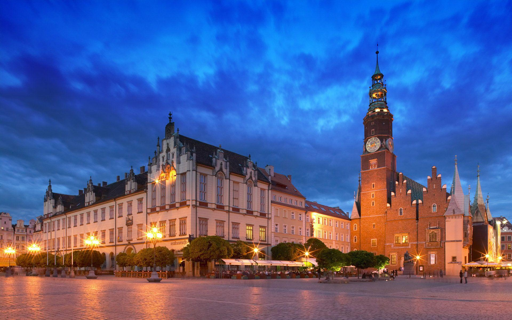

Malbork Castle

Masurian Lakeland

Main Market Square
Malbork Castle
Masurian Lakeland
Main Market Square


These sweet pastries have Polish and Czech roots and can also be spelled "kolaches." They are usually filled with poppy seeds, nuts, jam or a mashed fruit mixture. The ice cream is a unique twist on traditional kolachkes, and it's simplest to use a square cookie cutter to cut the dough. —Diane Turner, Brunswick, Ohio
I am positive that I will enjoy making these soft buttery cookies. Viewing the recipe, I will make these cookies all year long, I am truly the Cookie Monster.
We live in Lancaster County, which has a rich heritage of German culture. Our dishes often include sauerkraut, potatoes and sausage. We enjoy this recipe on cold winter evenings, along with muffins and fruit. —Linda Lohr, Lititz, Pennsylvania
This is excellent! I did substitute cream of chicken soup for the cream of mushroom since we didn't have any on hand.
Meat is a hard sell with my teenage daughter, unless I make it look like a restaurant dish. Drizzle ranch dressing or barbecue sauce on top, and it's a home run. —Donna Carney, New Lexington, Ohio
Used boneless center cut pork chops instead of tenderloin. This is definitely a new and unique way to bread pork chops for me
My mother made many dozens of these and measured ingredients using the palm of her hand. We've passed the recipe down over the years as the family has grown. —Veronica Weinkauf, South Bend, Indiana
These were amazing! It is a little bit of a time-consuming process
This traditional khruchiki recipe has been handed down through my mother's side from my great-grandmother. As a child, it was my job to loop the end of each cookie through its hole. —Sherine Elise Gilmour, Brooklyn, New York
My mother and grandmother used to make these all the time. The secret is to roll the dough as thin as you can get it. Wonderful!
I've always enjoyed cabbage rolls but didn't make them since most methods were too complicated. This recipe is fairly simple and results in the best cabbage rolls. My husband, Sid, requests them often. They're terrific to share at gatherings with our children and grandchildren. —Beverly Zehner, McMinnville, Oregon
Absolutely wonderful! Although, being Polish I definitely did not add the ketchup and Worcestershire sauce.